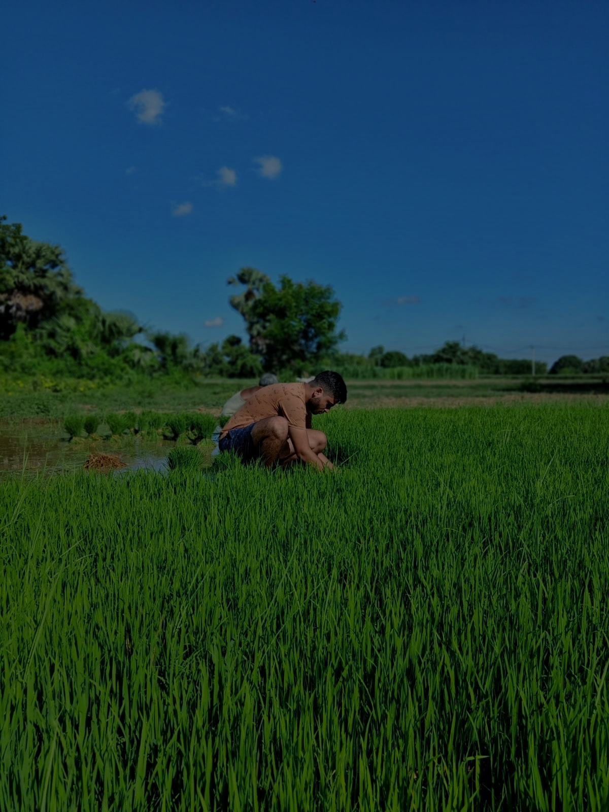
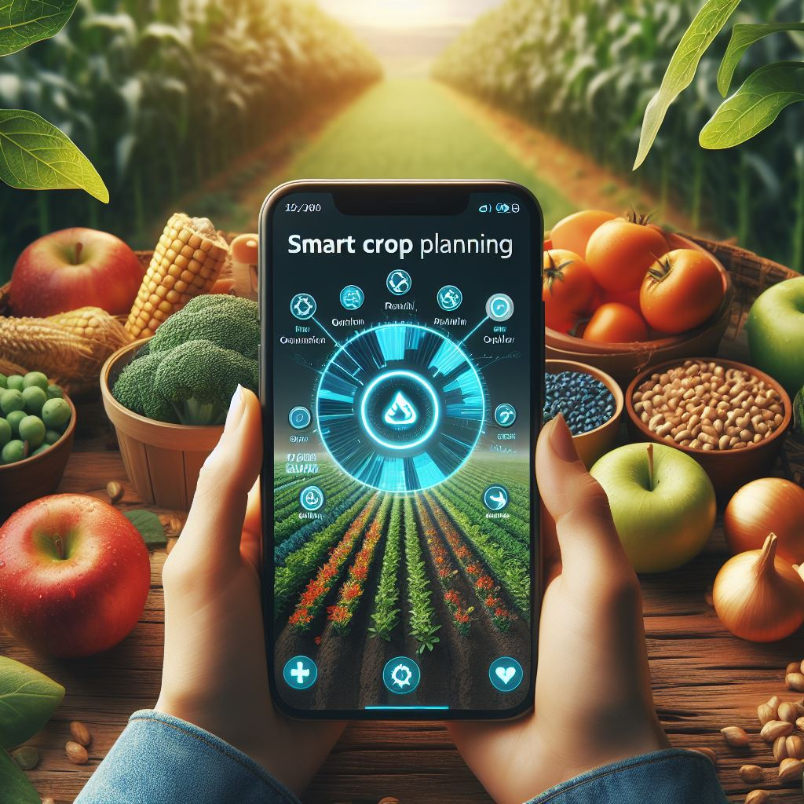
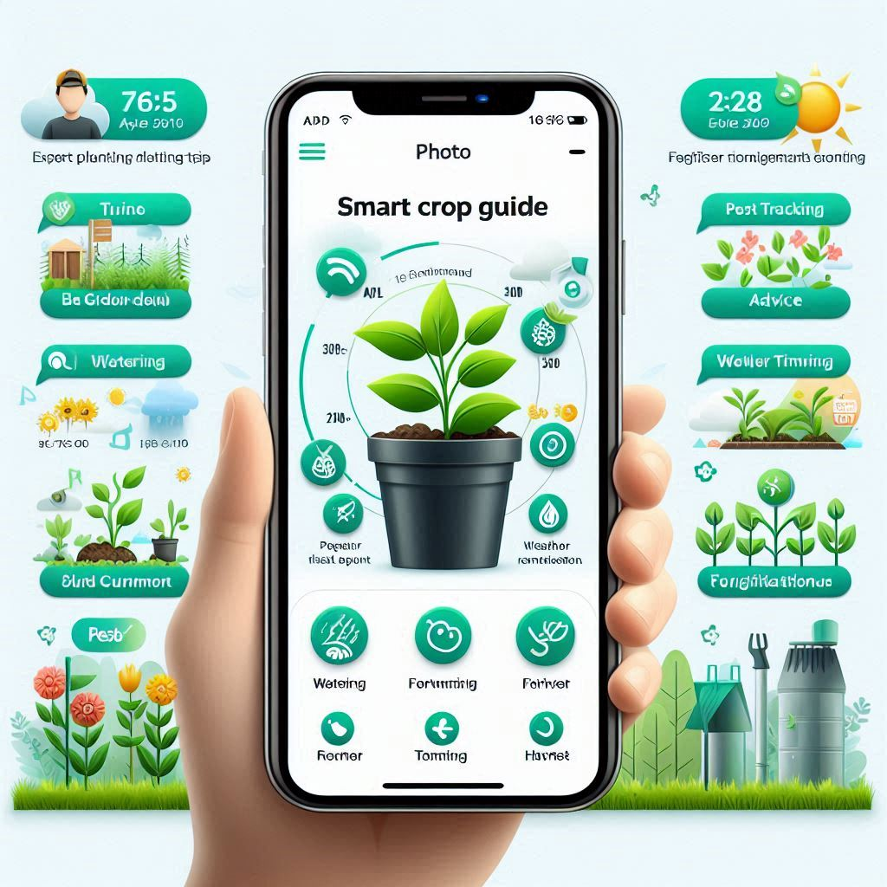
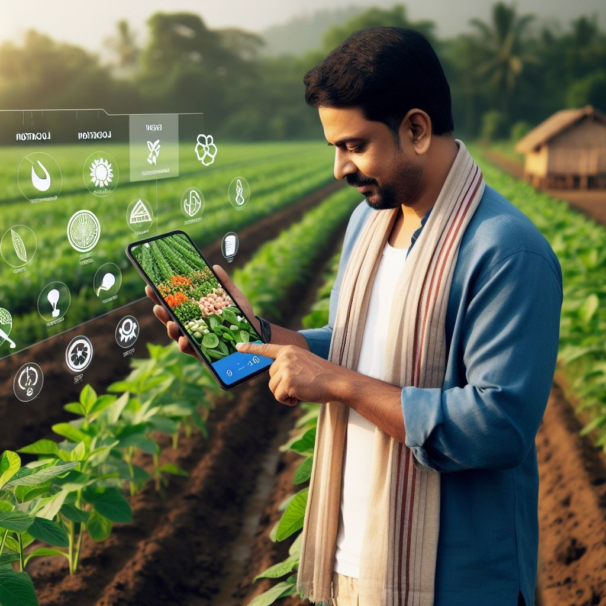

YOUR SMART FARMING ASSISTANT
Smart Crops, Smart Choices with CropAI!
Smart Farming guide
CropAI provides farmers with essential tools for smarter farming. It offers personalized crop recommendations based on soil and climate, provides advanced AI predictions. The app also includes features for crop planning and guidance, ensuring optimal farming decisions for better yields and healthier crops.
Harness the power of data analysis to predict crop suitability, providing insights into optimal cultivation conditions. CropAI optimizes farming decisions based on comprehensive factors like soil quality, climate, and more.

Smart Crop Guide offers a simple, step-by-step plan for growing crops. It provides expert planting tips, tracks growth stages, and sends watering reminders. The app also gives pest control advice, harvest timing, climate insights, and fertilizer recommendations to ensure healthy crops.

Smart Crop Tech, Precision Farming, and Customizable Solutions for Sustainable and Efficient Agriculture!
Our application features a user-friendly interface designed for farmers of all technological backgrounds. With simple inputs like location and crop selection, users can effortlessly access detailed information on crop suitability and recommended planting schedules.
